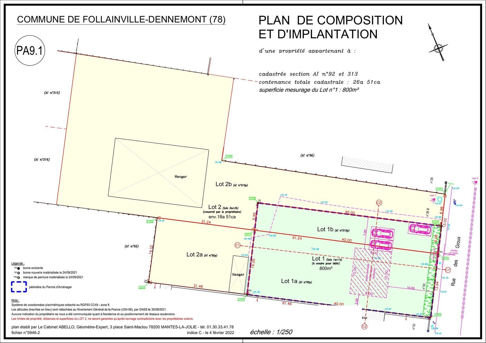
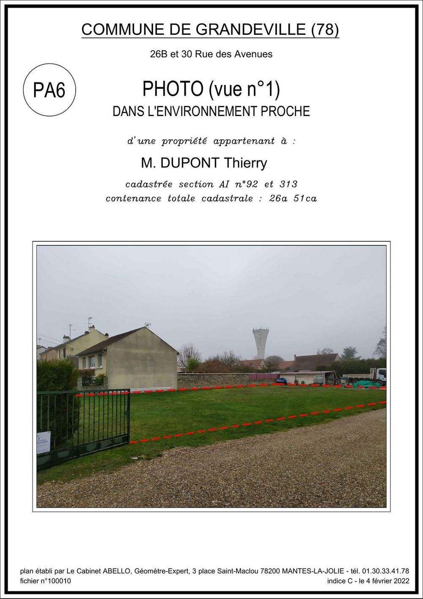
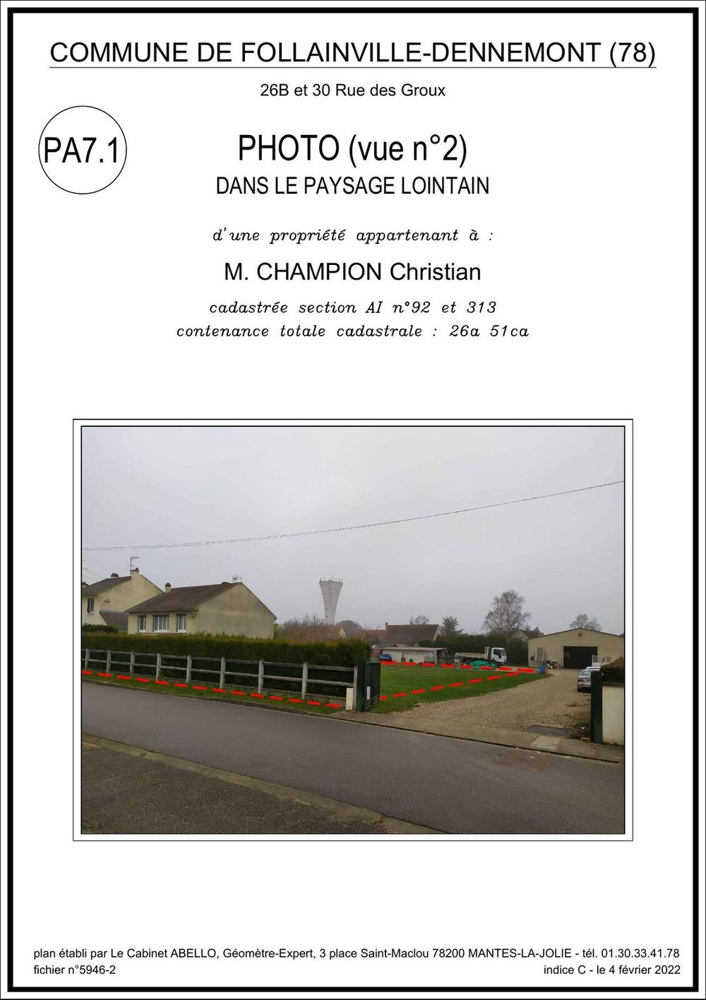
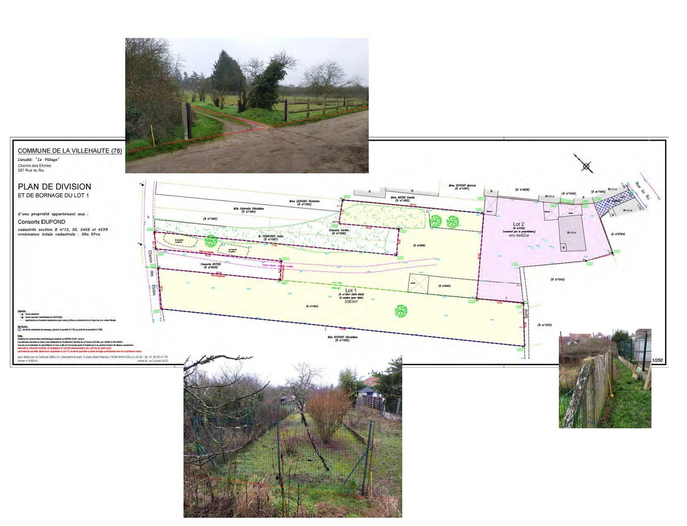
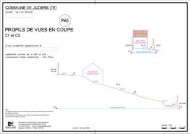
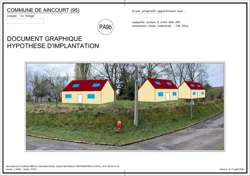
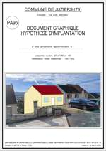

Déclaration préalable ou permis d'aménager ?
C'est le premier arbitrage, et il commande tout le reste : le contenu du dossier, le délai, et le coût de l'opération.
La déclaration préalable suffit pour les divisions les plus simples, lorsque chaque lot se raccorde directement à la voie et aux réseaux existants.
Le permis d'aménager devient nécessaire dès que l'opération crée ou aménage des voies, des espaces ou des équipements communs à plusieurs lots destinés à être bâtis, dont la réalisation incombe au lotisseur.
Il s'applique aussi hors lotissement : terrains de camping, aires de stationnement, terrains de sports et de loisirs, aires d'accueil des gens du voyage, et certains affouillements ou exhaussements de sol au-delà des seuils réglementaires.
Cette qualification se vérifie avant d'engager quoi que ce soit. Se tromper de procédure fait perdre plusieurs mois.
Ce qui change au 28 septembre 2026 en secteur protégé
Le décret n° 2026-674 du 27 juillet 2026 allège la procédure applicable aux divisions foncières situées aux abords d'un monument historique, en site patrimonial remarquable ou en site classé.
La règle antérieure
Jusqu'au 27 septembre 2026, une division située dans l'un de ces périmètres basculait automatiquement en permis d'aménager. La seule localisation du terrain suffisait, quelle que soit la modestie de l'opération : deux lots sans la moindre voie commune relevaient du même régime qu'un lotissement de vingt parcelles avec voirie et réseaux.
La règle nouvelle
Pour les demandes déposées à compter du 28 septembre 2026, ce basculement automatique disparaît. Le paragraphe du Code de l'urbanisme qui l'imposait est purement et simplement supprimé — il ne s'agit pas d'une reformulation, mais d'une suppression. Le critère devient unique : la création ou l'aménagement de voies, d'espaces ou d'équipements communs à plusieurs lots destinés à être bâtis.
Une division en secteur protégé qui ne crée aucun équipement commun relève donc désormais de la déclaration préalable.
Ce que le décret ne change pas
C'est le point à retenir : la procédure s'allège, le droit applicable ne bouge pas.
La consultation de l'Architecte des Bâtiments de France reste due dès lors que le terrain se situe dans un périmètre de protection. Les règles du plan local d'urbanisme s'appliquent à l'identique. Les servitudes, les obligations de viabilisation et les prescriptions patrimoniales demeurent.
Pour les déclarations préalables déposées en secteur protégé, le délai d'instruction fait l'objet d'une majoration d'un mois supplémentaire, le temps que l'Architecte des Bâtiments de France rende son avis — une règle qui existe depuis 2007 (article R.423-24 du Code de l'urbanisme).
Autrement dit, le guichet est simplifié : l'examen du projet, lui, reste le même.
Si votre projet se situe dans un périmètre protégé et que vous hésitiez à l'engager en raison de la lourdeur du permis d'aménager, la question mérite d'être réexaminée. Nous vérifions la localisation exacte du terrain au regard des périmètres de protection, et nous vous disons de quelle procédure vous relevez.
Le plan de composition

Ce que contient le dossier
Le formulaire n'est que la couverture. L'essentiel tient dans les pièces graphiques et écrites, numérotées PA1 et suivantes.
- PA1 — Le plan de situationIl localise le terrain dans la commune et permet de déterminer quelles règles lui sont applicables. C'est aussi lui qui révèle la présence d'un périmètre de protection.
- PA2 — La notice de présentationElle décrit le terrain, son environnement, le parti d'aménagement retenu et son insertion dans le site.
- PA3 — Le plan de l'état actuelLe terrain tel qu'il est : limites, bâti, végétation, accès, niveaux. C'est le levé topographique.
- PA4 — Le plan de compositionLe projet, coté dans les trois dimensions : lots, voirie, réseaux, espaces communs, avec les cotes et les superficies.
- PA5 — Vues et coupesElles montrent la situation du projet dans le profil du terrain naturel.
- PA6 et PA7 — Les photographiesDeux vues du terrain, l'une dans l'environnement proche, l'autre dans le paysage lointain.
- PA8 — Le programme et les plans des travauxVoirie, réseaux, éclairage, espaces verts : ce qui sera réalisé et selon quelles caractéristiques techniques.
- PA10 — Le règlement de lotissementFacultatif mais fréquent : il complète le plan local d'urbanisme par des règles propres à l'opération.
Les quatre premières pièces — PA1, PA2, PA3 et PA4 — sont exigées dans tous les dossiers, sans exception. Trois d'entre elles sont un travail de mesure et de dessin.
Le formulaire Cerfa 16297
Son intitulé exact : « Demande de permis d'aménager comprenant ou non des constructions et/ou des démolitions ». Il a remplacé l'ancien formulaire 13409 pour les demandes déposées à compter du 1er janvier 2024.
L'usage d'un formulaire réglementaire pour toute demande de permis d'aménager est imposé par l'article R.423-1 du Code de l'urbanisme, qui renvoie à un arrêté du ministre chargé de l'urbanisme pour fixer le modèle du formulaire — c'est cet arrêté, actuellement celui du 22 septembre 2023, qui a fixé le numéro Cerfa 16297.
Le formulaire compte dix cadres. Deux d'entre eux méritent une attention particulière, parce que ce sont eux qui déterminent la nature de l'opération.
- Identité du demandeurPersonne physique ou morale. En cas d'indivision, tous les indivisaires.
- Coordonnées du demandeurAdresse de correspondance, à laquelle sera notifiée la décision.
- Le terrainRéférences cadastrales, superficie, adresse. C'est ici que les erreurs de désignation se paient le plus cher.
- Projet d'aménagementNombre de lots, surface de plancher envisagée, nature des travaux, équipements communs.
- Projet de constructionÀ remplir lorsque le permis d'aménager comprend aussi des constructions.
- DémolitionsÀ remplir lorsque le projet nécessite de démolir tout ou partie d'un bâtiment existant.
- Participation pour voirie et réseauxLe cas échéant, selon les délibérations de la commune.
- Législations connexesPatrimoine, environnement, défrichement, autorisation commerciale, établissements recevant du public.
- Engagement du demandeurSignature. Elle engage sur l'exactitude des déclarations portées au dossier.
- Permis portant sur un lotissementLe cadre qui distingue le lotissement des autres opérations d'aménagement.
Les vues du terrain



Coupes et insertion paysagère : deux pièces presque toujours demandées
La pièce PA5 (vues et coupes) et l'insertion paysagère sont presque toujours demandées dans un dossier de permis d'aménager, comme pour un permis de construire. Extraits de dossiers réels du cabinet, données personnelles masquées.



Les délais, et pourquoi ils comptent
Le délai d'instruction n'est qu'une partie du calendrier. C'est ce qui l'entoure qui surprend le plus souvent les propriétaires.
Le délai d'instruction de droit commun d'un permis d'aménager est de trois mois à compter du dépôt d'un dossier complet. Il est majoré dans plusieurs cas : abords de monument historique, site patrimonial, parc national, autorisation commerciale.
À cela s'ajoute, en amont, le temps du géomètre : levé du terrain, recherche d'archives, analyse des limites, conception du plan de composition, montage des pièces. Et, en aval, le temps de l'affichage sur le terrain, qui ouvre le délai de recours des tiers.
Comptez, en pratique, de l'ordre de quatre mois avant de pouvoir signer la moindre promesse de vente, auxquels s'ajoute la durée d'affichage de l'autorisation.
Peut-on vendre les lots avant d'avoir le permis ?
Non. C'est l'une des règles les plus strictes du droit du lotissement, et l'une des plus souvent ignorées. Elle mérite d'être exposée en détail, parce que la méconnaître fait perdre bien davantage que du temps.
Avant l'autorisation : rien
Tant que l'autorisation n'est pas délivrée, le lotisseur ne peut ni vendre, ni promettre de vendre, ni recevoir le moindre versement au titre d'une réservation. C'est l'objet de l'article L.442-4 du Code de l'urbanisme.
La raison est simple : avant l'autorisation, les lots n'existent pas juridiquement. Ni leur consistance, ni leur superficie, ni leur constructibilité ne sont acquises. Vendre dans ces conditions reviendrait à céder quelque chose dont on ignore encore la nature exacte.
Après l'autorisation, travaux non achevés
Une fois le permis d'aménager obtenu, la commercialisation devient possible, mais reste encadrée. Seule une promesse unilatérale de vente peut alors être consentie — c'est l'article L.442-8.
L'indemnité d'immobilisation qui l'accompagne est plafonnée à 5 % du prix et doit être restituée si les conditions suspensives ne se réalisent pas (article R.442-12). L'acquéreur dispose par ailleurs d'un délai de rétractation de dix jours, prévu par l'article L.442-8 lui-même : la promesse ne devient définitive qu'au terme de ce délai.
La vente définitive, elle, suppose en principe l'achèvement des travaux d'aménagement, sauf autorisation expresse de vente par anticipation.
La publicité obéit aux mêmes règles
Avant la délivrance du permis, aucune promesse de vente ne peut être consentie et aucun acompte ne peut être accepté (article L.442-4). Une annonce reste possible, à condition de ne créer aucun engagement et de ne pas laisser croire que l'autorisation est déjà acquise. Une fois le permis obtenu, la publicité doit préciser que le dossier peut être consulté en mairie.
Précision utile : ces règles sont propres au régime du lotissement. Une division qui relève de la déclaration préalable obéit à un formalisme allégé, mais la prudence reste la même — tant qu'une autorisation n'est pas acquise et purgée, la consistance des lots n'est pas définitivement établie. Nous examinons ce point dossier par dossier.
Les textes applicables
Les références qui commandent la matière, pour ceux qui souhaitent remonter à la source.
« Constitue un lotissement la division en propriété ou en jouissance d'une unité foncière ou de plusieurs unités foncières contiguës ayant pour objet de créer un ou plusieurs lots destinés à être bâtis. »
Code de l'urbanisme, article L.442-1- Article L.442-1Définition du lotissement, dans sa rédaction issue de l'ordonnance n° 2011-1916 du 22 décembre 2011.
- Article R.442-1Les divisions qui échappent au champ du lotissement : division primaire, permis de construire valant division, et autres cas énumérés.
- Article R.421-19Les opérations soumises à permis d'aménager. C'est l'article modifié par le décret n° 2026-674 du 27 juillet 2026.
- Article R.421-23Les opérations relevant de la déclaration préalable.
- Article L.442-4Interdiction de vendre, de promettre de vendre et de recevoir un acompte avant l'autorisation.
- Article L.442-8Après l'autorisation et avant achèvement des travaux : promesse unilatérale de vente seulement.
- Article R.442-12Indemnité d'immobilisation plafonnée à 5 % du prix, restituable.
- Article R.423-1Renvoie à un arrêté ministériel le modèle du formulaire de demande — c'est le fondement de l'usage du Cerfa 16297.
- Articles R.424-17 à R.424-21Durée de validité d'une autorisation d'urbanisme, péremption et conditions de prorogation.
Les questions qu'on nous pose
Toute division crée-t-elle un lotissement ?
En principe oui, dès lors qu'une propriété est divisée en vue de bâtir — mais la réglementation prévoit plusieurs cas qui échappent à ce régime, énumérés à l'article R.442-1 du Code de l'urbanisme : division primaire, permis de construire valant division, détachement au profit d'un propriétaire contigu, opérations de remembrement, zones d'aménagement concerté, entre autres. La qualification dépend du projet, du nombre de lots, de l'intention de construire et de la nature du détachement. C'est la première question que nous instruisons.
Peut-on vendre les lots avant l'obtention du permis ?
Non. L'article L.442-4 du Code de l'urbanisme interdit, avant la délivrance de l'autorisation, toute vente, toute promesse de vente et tout versement au titre d'une réservation. Une fois le permis obtenu et tant que les travaux ne sont pas achevés, seule une promesse unilatérale de vente est possible (article L.442-8), avec une indemnité d'immobilisation plafonnée à 5 % du prix et restituable (article R.442-12). Nous déconseillons par ailleurs d'engager la commercialisation avant que le délai de recours des tiers ne soit purgé : un lot vendu sur un permis encore attaquable est une position fragile.
Mon terrain est près d'un monument historique : suis-je obligé de faire un permis d'aménager ?
Plus automatiquement. Jusqu'au 27 septembre 2026, la seule localisation aux abords d'un monument historique, en site patrimonial remarquable ou en site classé imposait le permis d'aménager. Le décret n° 2026-674 du 27 juillet 2026 a supprimé ce paragraphe pour les demandes déposées à compter du 28 septembre 2026 : c'est désormais la création de voies, d'espaces ou d'équipements communs qui commande la procédure. Attention toutefois — l'Architecte des Bâtiments de France reste consulté, les prescriptions patrimoniales s'appliquent comme avant, et le délai d'instruction d'une déclaration préalable en secteur protégé est majoré d'un mois supplémentaire.
Le règlement de lotissement est-il obligatoire ?
Non, il est facultatif. Il devient utile lorsque l'aménageur veut imposer aux futurs acquéreurs des règles que le plan local d'urbanisme ne prévoit pas : implantation, aspect, clôtures, plantations. Il se rédige avec soin, car il engage l'opération sur le long terme.
Qui borne les lots ?
Le géomètre-expert. La vente d'un terrain à bâtir issu d'un lotissement suppose que le descriptif du terrain résulte d'un bornage. Nous déterminons les limites, posons les bornes et établissons le procès-verbal.
Combien de temps le permis reste-t-il valable ?
Une autorisation d'urbanisme a une durée de validité limitée, et prorogeable dans certaines conditions. Ces règles figurent aux articles R.424-17 à R.424-20 du Code de l'urbanisme pour le délai de validité et sa péremption, et à l'article R.424-21 pour la prorogation. Cette durée a évolué au fil des textes récents : nous vous indiquons celle qui s'applique à votre autorisation au vu de sa date de délivrance.
Un projet d'aménagement ?
Le cabinet intervient à Mantes-la-Jolie, à Limay et dans toute la vallée de la Seine. Décrivez-nous le terrain et le nombre de lots envisagés : nous vous dirons de quelle procédure vous relevez et ce qu'elle suppose.
Sources : Code de l'urbanisme, articles L.442-1 et suivants (lotissements), R.442-1 (divisions exclues), R.421-19 et R.421-23 (opérations soumises à permis d'aménager ou à déclaration préalable), L.442-4, L.442-8 et R.442-12 (vente des lots et publicité) ; décret n° 2026-674 du 27 juillet 2026 portant diverses mesures de simplification en matière d'urbanisme, publié au Journal officiel du 28 juillet 2026, applicable aux demandes déposées à compter du 28 septembre 2026 (source : UNGE, Trait d'Union n° 1687 du 6 août 2026, erratum) ; arrêté du 22 septembre 2023 modifiant le numéro Cerfa du formulaire de demande de permis d'aménager, qui remplace le numéro Cerfa 13409 par le numéro 16297 pour les demandes déposées à compter du 1er janvier 2024 ; formulaire Cerfa 16297 et son bordereau de pièces jointes ; Service-Public.fr, fiche « Permis d'aménager ». Les délais et seuils indiqués sont donnés à titre d'information générale, à la date de rédaction de cette page, et ne remplacent pas l'examen de votre dossier.